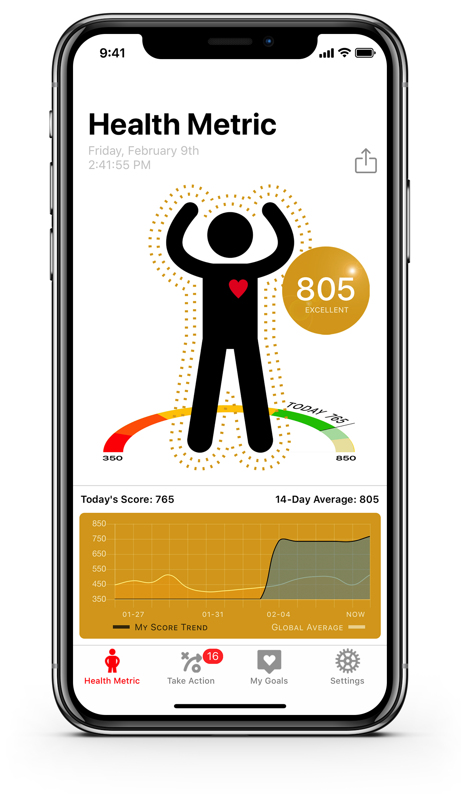
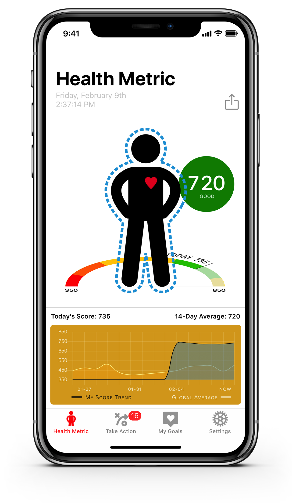
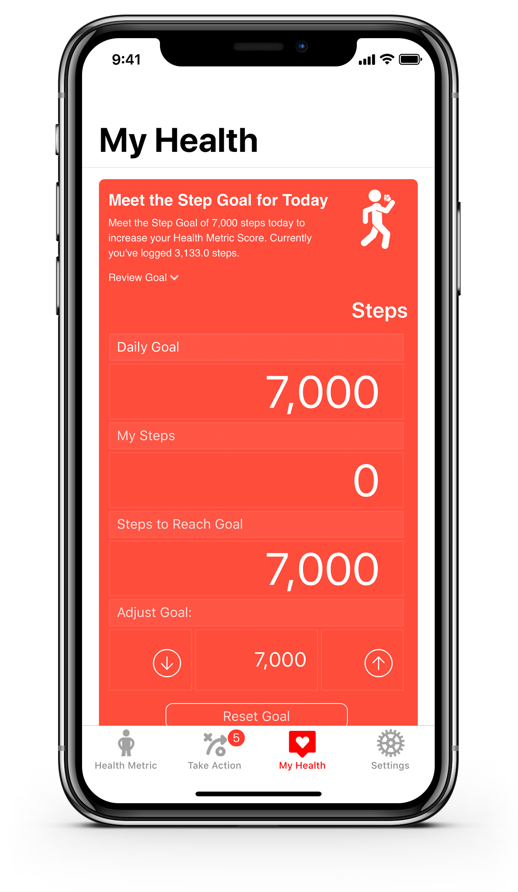
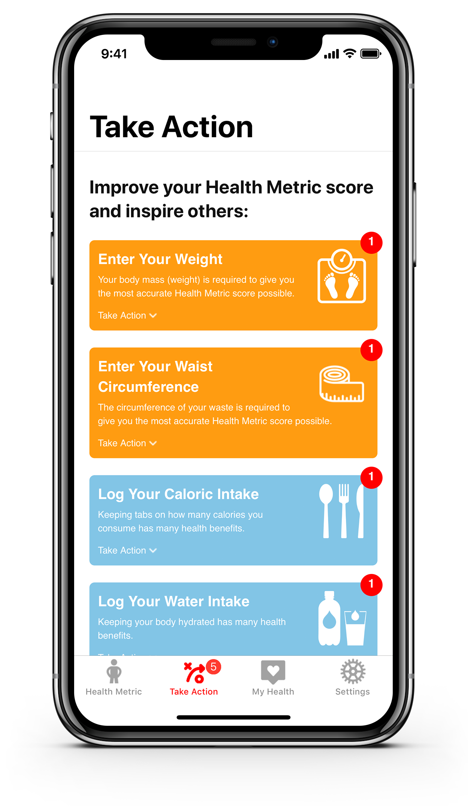

Skills
Ionic, PHP, HTML, CSS, Javascript, d3.js, MongoDB, MySQL
Timeline
3 months
Overview
This project was done as part of my internship at Management Science Associates.
Over the summer, I built an iOS application that enabled users to track one's health and provide better data to health professionals. This project started out by identifying pain points of users by gathering user stories and converted these into functional requirements. After designing the UI/UX of the application using Sketch and conducting AB testing, I then developed the application.
I have also developed a dashboard to visualize performance metrics used to monitor the effectiveness of decisions using MongoDB, MySQL and d3.js



